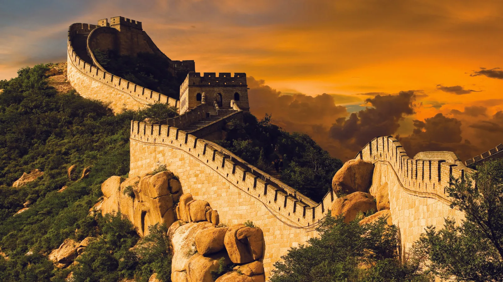
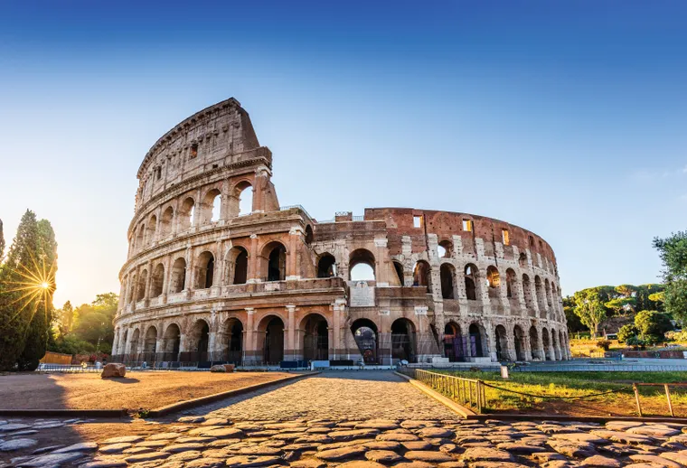

Otra de las maravillas del mundo moderno localizadas en Latinoamérica es Machu Picchu. Ubicado a 2430 metros de altura en medio de un bosque tropical de montaña, el santuario es considerado una de las realizaciones arquitectónicas más imponentes del Imperio Inca. Desde 1983 es parte del patrimonio mundial.
Fue construida alrededor del año 220 a.C. por el primer emperador Qin Shin Huang, quien ordenó reunir los tramos de fortificaciones construidas anteriormente, a fin de crear un sistema de defensa contra las invasiones de los pueblos del Norte, revela la Organización de las Naciones Unidas para la Educación, la Ciencia y la Cultura (Unesco, por sus siglas en inglés).
Chichén Itzá es una ciudad maya de la península de Yucatán (México) que floreció en los siglos IX y X. De acuerdo con Unesco, esta ciudad sagrada fue uno de los centros más importantes de la civilización maya.
Entre los edificios que han sobrevivido al paso del tiempo figuran el Templo de los Guerreros, el Castillo y el observatorio circular conocido por el nombre de El Caracol. Por su relevancia, también se encuentra en la lista del patrimonio desde 1988.
Petra es uno de los sitios arqueológicos más célebres del mundo. Se encuentra en la actual Jordania en un valle remoto, entre montañas de arenisca y acantilados. En parte está esculpida en roca y en parte construida en medio de las montañas surcadas por pasos y desfiladeros.
El emblemático Cristo Redentor que se encuentra en la cima del monte Corcovado en Río de Janeiro (Brasil) es otro de los destinos destacados. La emblemática construcción comenzó en 1926 y finalizó cinco años más tarde.
Según informa Britannica, el monumento está hecho de hormigón armado y mide 30 metros de altura sin incluir su base, que mide unos 8 metros, y sus brazos extendidos miden 28 metros. Es la escultura Art Déco más grande del mundo. El Cristo Redentor está recubierto de unos seis millones de azulejos.
El Coliseo de Roma es considerada una proeza de ingeniería construida en el siglo I por orden del emperador Vespasiano, señala Britannica. El anfiteatro mide 189 por 156 metros y cuenta con un complejo sistema de bóvedas. En su apogeo, la estructura tenía capacidad para 50 000 espectadores que podían apreciar luchas de gladiadores y combates entre hombres y animales.
La séptima maravilla del mundo moderno es el Taj Mahal, en la India. Se trata de un imponente mausoleo de mármol blanco edificado entre los años 1631 y 1648 por orden del emperador mogol Shah Jahan para perpetuar la memoria de su esposa favorita, explica la Unesco.
La enciclopedia agrega que el mausoleo cuenta con piedras semipreciosas en motivos geométricos y florales, una cúpula central rodeada de cuatro cúpulas más pequeñas y un inmenso jardín con un estanque reflectante.
Las 7 maravillas del mundo son una lista de impresionantes construcciones y sitios históricos que destacan por su belleza arquitectónica y su significado cultural. Entre ellas se encuentran Machu Picchu en Perú, una antigua ciudad inca situada en los Andes; la Gran Muralla China, una obra monumental que se extiende a lo largo del país; Chichen Itzá en México, famosa por su pirámide de Kukulkán; Petra en Jordania, conocida por sus impresionantes edificaciones talladas en roca; el Cristo Redentor en Brasil, un símbolo icónico de Río de Janeiro; el Coliseo Romano en Italia, un antiguo anfiteatro; y el Taj Mahal en India, un majestuoso mausoleo de mármol. Cada una de estas maravillas refleja la creatividad y el ingenio humano a lo largo de la historia.
Descubre la belleza y la historia detrás de las 7 maravillas del mundo. Cada una de ellas nos cuenta una historia única y refleja la grandeza de las civilizaciones pasadas. ¡Explora y déjate inspirar por estas increíbles obras maestras